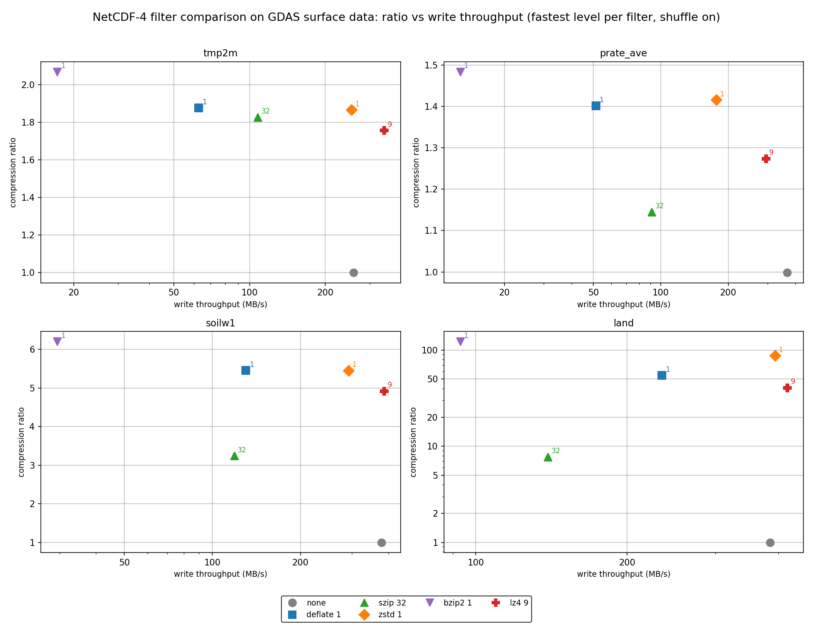
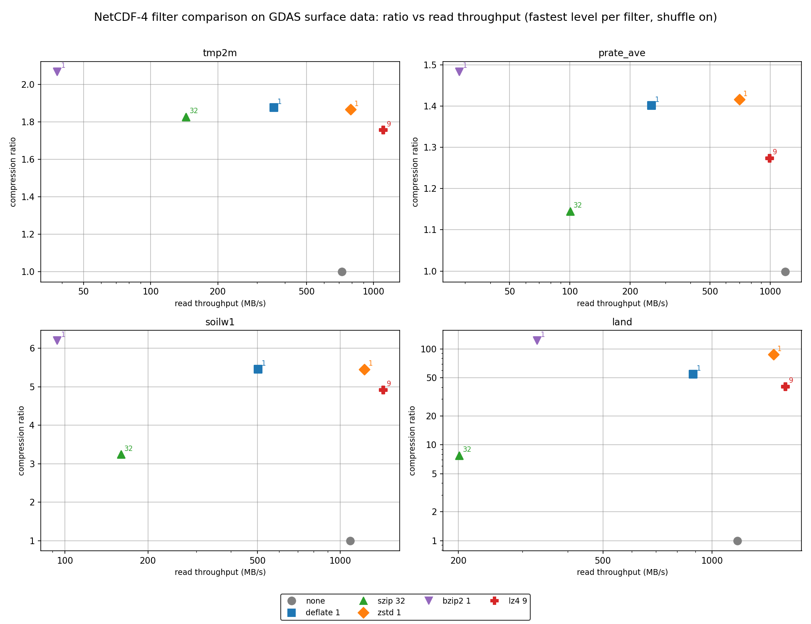
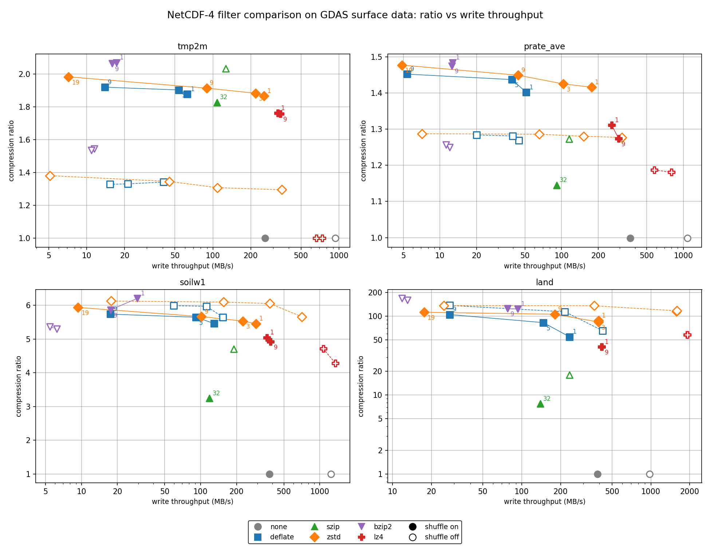
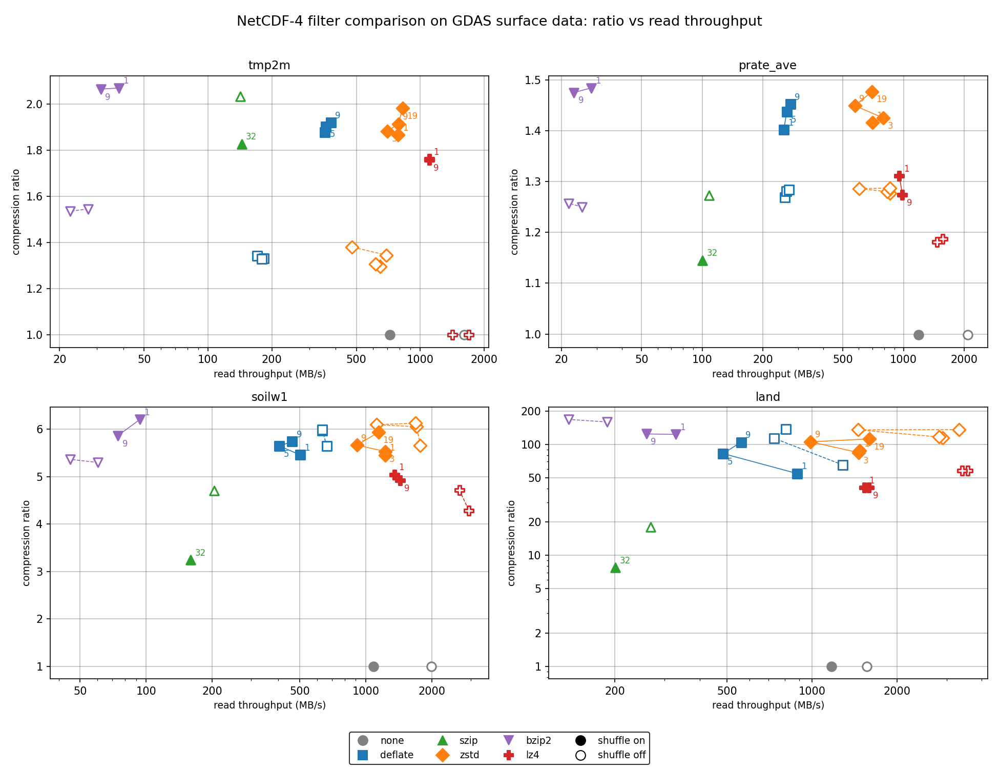
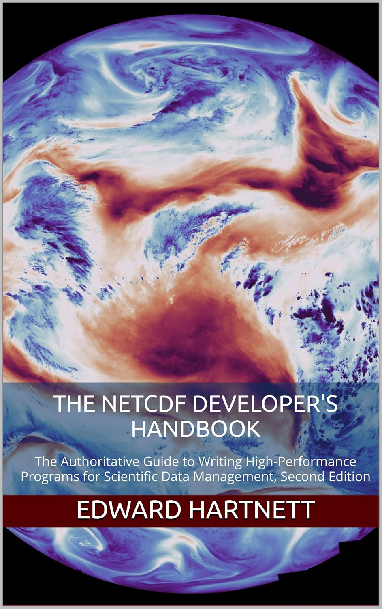
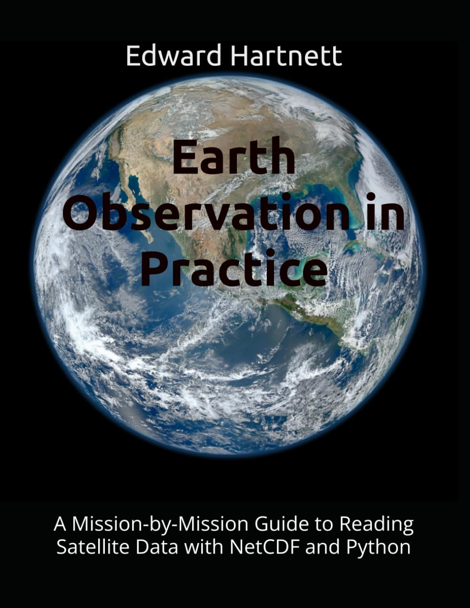

|
nep-compress 1.2.0
LZ4, BZIP2 and JPEG-LS compression filters for NetCDF-4/HDF5
|
nep-compress provides LZ4 and BZIP2 compression filters for NetCDF-4/HDF5, with C and optional Fortran wrapper APIs. It is being separated from NEP to make compression easier to build and use without installing NEP's format readers. NEP remains the project for UDF formats and NEXTCDF-4.
nep-compress builds the LZ4 HDF5 plugin (libh5lz4, filter ID 32004) itself. For BZIP2 (filter ID 307) it builds the Fortran API but requires an external HDF5 plugin that provides ID 307 for both writing and reading; the C functions are NetCDF-C's own. For JPEG-LS (filter ID 32018), the EUMETSAT FCIDECOMP filter used for Meteosat FCI imagery, nep-compress provides the C and Fortran API and likewise requires an external plugin. The extended abstract describes the package and its measured compression guidance.
The C API is declared in nep_compress.h:
nc_def_var_bzip2, nc_inq_var_bzip2 — BZIP2, filter ID 307 (BZIP2_ID); these are NetCDF-C's functions, declared in netcdf_filter.h.The Fortran module nep_compress provides the equivalents nf90_def_var_lz4(), nf90_inq_var_lz4(), nf90_def_var_bzip2(), nf90_inq_var_bzip2(), nf90_def_var_jpegls(), and nf90_inq_var_jpegls().
The LZ4 filter plugin itself is implemented in H5Zlz4.c. Its on-disk chunk encoding is described in the LZ4 HDF5 format page. See the compression guide for usage and file-compatibility details.
NetCDF-4 variables are compressed through HDF5 filters applied to chunked storage. The filters available to NetCDF-4 users:
| Filter | HDF5 ID | Provided by | Plugin required | API call | Parameters / levels | Typical trade-off | Lossless |
|---|---|---|---|---|---|---|---|
| deflate (zlib) | 1 | Built into HDF5 | No | nc_def_var_deflate(ncid, varid, shuffle, deflate, level) | level 1-9 (0 = no compression); the same call's shuffle argument controls shuffle | Balance of speed and ratio; universally readable | Yes |
| szip | 4 | HDF5 built with libaec/szip | No (when HDF5 has szip) | nc_def_var_szip(ncid, varid, options_mask, pixels_per_block) | NC_SZIP_NN or NC_SZIP_EC; pixels_per_block even and <= 32 | Good on integer/telemetry-like data; cannot be combined with deflate | Yes |
| zstandard | 32015 | NetCDF-C plugin lib__nch5zstd | Yes | nc_def_var_zstandard(ncid, varid, level) | levels -131072 to 22 | Wide range from fast to high ratio | Yes |
| bzip2 | 307 | External HDF5 plugin (NetCDF-C ships lib__nch5bzip2; other providers exist) | Yes | nc_def_var_bzip2(ncid, varid, level) (NetCDF-C) | level 1-9 (block size 100-900 KB) | Favors ratio over speed | Yes |
| LZ4 | 32004 | nep-compress (vendored HDF Group plugin) libh5lz4 | Yes | nc_def_var_lz4(ncid, varid, level) | level 1-9 (fast-mode acceleration; stored as {0, 1-level}) | Favors speed | Yes |
| JPEG-LS | 32018 | External EUMETSAT fcidecomp plugin (also in hdf5plugin) | Yes | nc_def_var_jpegls(ncid, varid, near) | near 0 (lossless) or 1-127 / 1-255; 8/16-bit integer types, rank 2-3 | Strong on integer imagery; used for Meteosat FCI L1c | Yes when near = 0; lossy when near > 0 |
Note that nc_def_var_zstandard() does nothing when NetCDF-C was built without zstd; check NC_HAS_ZSTD or nc-config --has-zstd before relying on it.
These HDF5 pipeline entries are not compressors but change the result:
nc_def_var_deflate().nc_def_var_quantize()) is a lossy step that zeroes low-order mantissa bits (NC_QUANTIZE_BITGROOM, NC_QUANTIZE_GRANULARBR, or NC_QUANTIZE_BITROUND), improving the compression achieved by a subsequent lossless filter.perf_compare_filters, because that test's fields are float.Measured guidance on real data is in Which compression should I use? below.
Every filter other than deflate and szip requires the HDF5 plugin that implements it to be present on HDF5_PLUGIN_PATH, both when writing and when a reader later opens the file.
The performance examples contain historical LZ4 and BZIP2 measurements (lz4_results.csv, bzip2_results.csv).
The perf_compare_filters test rewrote four fields from a real GDAS surface file with every lossless filter, each with the shuffle filter off and on, on one development machine (see reference_machine.txt; full CSV in reference_results.csv; see the performance README). The table below shows the shuffle-on rows for two of the fields: tmp2m (smooth 2 m temperature) and prate_ave (noisy precipitation rate).
| Filter | Level | tmp2m ratio | tmp2m write MB/s | tmp2m read MB/s | prate_ave ratio | prate_ave write MB/s | prate_ave read MB/s |
|---|---|---|---|---|---|---|---|
| none | 0 | 1.00 | 259 | 721 | 1.00 | 367 | 1188 |
| deflate | 1 | 1.88 | 63 | 356 | 1.40 | 51 | 254 |
| deflate | 5 | 1.90 | 54 | 358 | 1.44 | 39 | 263 |
| deflate | 9 | 1.92 | 14 | 380 | 1.45 | 5 | 275 |
| szip | 32 | 1.83 | 108 | 144 | 1.15 | 91 | 100 |
| zstd | 1 | 1.87 | 254 | 788 | 1.42 | 177 | 702 |
| zstd | 3 | 1.88 | 219 | 700 | 1.43 | 103 | 795 |
| zstd | 9 | 1.91 | 89 | 790 | 1.45 | 44 | 574 |
| zstd | 19 | 1.98 | 7 | 826 | 1.48 | 5 | 698 |
| bzip2 | 1 | 2.07 | 17 | 38 | 1.48 | 13 | 28 |
| bzip2 | 9 | 2.06 | 16 | 31 | 1.48 | 12 | 23 |
| lz4 | 1 | 1.76 | 328 | 1101 | 1.31 | 258 | 953 |
| lz4 | 9 | 1.76 | 342 | 1103 | 1.27 | 294 | 988 |
The graphs below plot the same reference run (all four fields, all filters). They were drawn from reference_results.csv by performance/plot_compare_filters.py; run that script on your own compare_filters.csv to get the same graphs for your machine.
How the measurements were made. Each field is one 1 x 768 x 1536 NC_FLOAT array (4,718,592 bytes uncompressed), written as a single chunk to a new NetCDF-4 file with fill turned off. Write throughput is the uncompressed field size divided by the time from nc_create() to nc_close() (define the variable and its filters, nc_enddef(), nc_put_var_float(), close). Read throughput is the uncompressed size divided by the time from nc_open() to nc_close() (find the variable, nc_get_var_float(), close). Both include file open, close and metadata costs, not just the compressor. Each setting was run three times and the fastest time is used. Compression ratio is the uncompressed field size divided by the size of the whole file on disk, so the "none" points sit just below 1.0 (the file carries a few KB of HDF5 metadata). Every run was read back and checked bit-for-bit against the original; all filters here are lossless.
The four fields come from a NOAA GFS/GDAS surface forecast file:
tmp2m: 2 m air temperature. A smooth, continuous field; typical of most model output.prate_ave: average precipitation rate. Noisy and hard to compress.soilw1: top-layer soil moisture. Defined over land only, with the fill value over the ocean.land: the land/sea mask. A few repeated categorical values, so it compresses very well.How to read the graphs. Each graph has one panel per field. The x axis is throughput in MB/s on a logarithmic scale; further right is faster. The y axis is the compression ratio; higher is smaller files. The y axis is linear, except for land, whose ratios span 1 to about 170 and use a logarithmic scale. The best filters for a field are toward the top right of its panel. Each filter has its own colour and marker shape (grey circle = none, blue square = deflate, green triangle = szip, orange diamond = zstd, purple downward triangle = bzip2, red plus = LZ4). The small numbers next to the points are the filter levels (for szip, the 32 pixels per block).


Figures 1 and 2 show one setting per filter so the filters can be compared directly. For each filter, the level with the highest write throughput averaged over the four fields was chosen, and the same level is used in every panel and in both figures: deflate 1, zstd 1, bzip2 1, LZ4 9 (LZ4's level is an acceleration setting, so 9 is slightly faster than 1 here) and szip with 32 pixels per block (its only setting). The shuffle filter is on for every point, including "none", where shuffle alone does no compression but still costs time. Figure 1 plots the write throughput and Figure 2 the read throughput of exactly the same runs, so each point has the same height in both figures.


Figures 3 and 4 show every setting that was measured: none, deflate levels 1, 5 and 9, szip, zstd levels 1, 3, 9 and 19, bzip2 levels 1 and 9, and LZ4 levels 1 and 9, each with the shuffle filter off and on. Filled markers have shuffle on; open markers have shuffle off. Points for the same filter and shuffle setting are joined in level order (solid line = shuffle on, dashed line = shuffle off), so each line shows what raising the level costs in speed and gains in ratio. Level numbers are printed next to the shuffle-on points only. Figure 3 plots write throughput and Figure 4 read throughput for the same runs.
These results come from one machine and one data set, and your data may behave differently. They still support some clear conclusions.
tmp2m shuffle raised the ratio of every compressor except szip by 35-45% (deflate 1: 1.34 to 1.88; zstd 1: 1.29 to 1.87). LZ4 did not compress tmp2m at all without shuffle (1.00) but reached 1.76 with it. On prate_ave the gain was 10-18%.land, shuffle lowered the ratio of deflate, zstd, szip, LZ4 and bzip2 (zstd 1: 115 without shuffle, 88 with), and on soilw1 it lowered deflate, zstd and szip. It also slows down the fastest filters.tmp2m, 1.42 vs 1.40 on prate_ave) while writing about 4 times faster (254 vs 63 MB/s on tmp2m) and reading 2 to 3 times faster (788 vs 356 MB/s).tmp2m, level 9 gained 2% in ratio (1.92 vs 1.88) but wrote 4.5 times slower.tmp2m and 8-11% below on prate_ave. Readers need the nep-compress LZ4 plugin.tmp2m) but reads as fast as zstd 1, which suits data that is written once and read often. bzip2 gave the highest ratio on tmp2m (2.07 vs 1.98) and tied on prate_ave, but it read at only 23-38 MB/s, 20-25 times slower than zstd. Choose it only when size matters far more than read time.tmp2m 2.03 to 1.83, prate_ave 1.27 to 1.15, soilw1 4.70 to 3.24, land 18.1 to 7.75). Without shuffle, szip did well on the smooth tmp2m field (2.03, second only to bzip2) but poorly on the other fields.NEPCOMPRESS_ZSTD_PLUGIN_DIR set (NetCDF-C 4.10.1 or later), point compare_filters at a file of your own fields (it expects the four variable names above, so adapt FIELDS as needed), and plot the CSV with plot_compare_filters.py. |  |
Edward Hartnett, Intelligent Data Design, Inc.